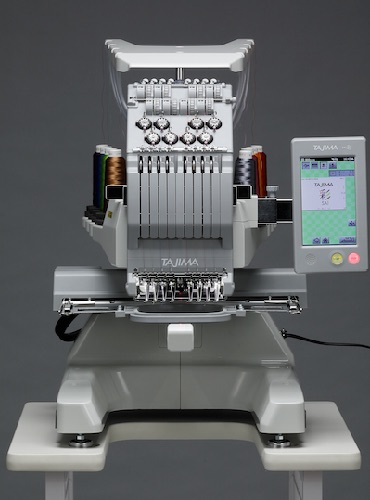

The Tajima Sai is a commercial embrodiery machine. The machine allows for you to embroider hats, apparel and merchandise. It is similar to most of the machines that we use in class as it uses the x, y, and z axis to push a needle in the material. You will need to design or digitize a file to use with the machine.
Setting Up The Frame
Changing The Needle
Changing The Bobbin

1. Embroider a hat. Take a picture of the hat and describe the process mentioning what backing is used for and what types of backing was used on the project.
2. Sew your own pants. Describe the process us used to make the pants. What was the biggest challenge? What did you learn about using a sewing machine and the process? Take a picture of the finished pants and post it to showcase your work.